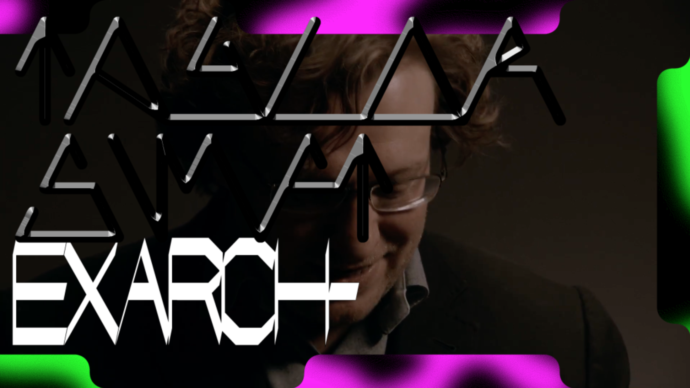
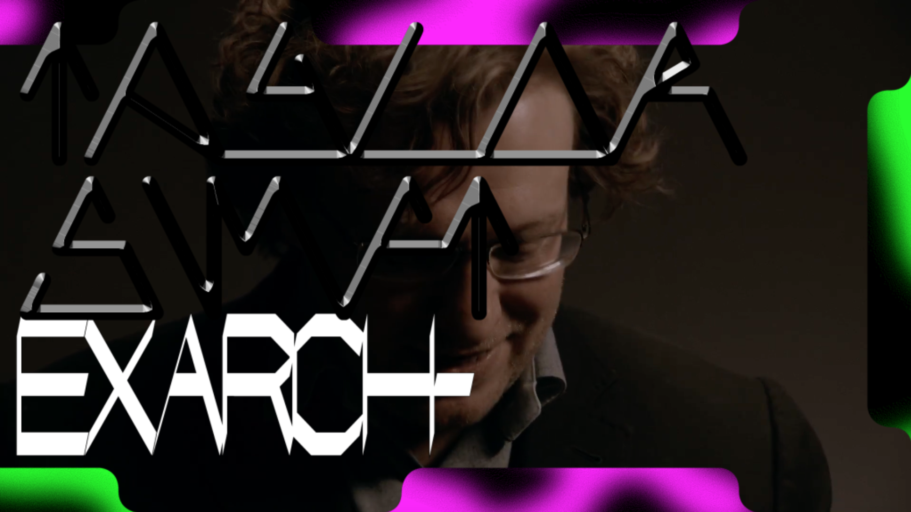

INLEIDING
Ik sprak Jan van Toorn in de lobby van het hotel waar ik met mijn schoolklas verbleef in Venetië. Van Toorn, mijn lerares Els Kuijpers, twee medestudenten en ik hadden een gesprek over de beeldende kunstbiennale die we daar bezochten. Wat me met name is bijgebleven is dat Van Toorn behoorlijk kritisch was over het meeste wat hij gezien had. Hij sloot die kritiek steeds af met ‘je moet je handen vuil maken’, als een soort relativerende uitspraak: de kunstenaar moet toch iets proberen.
Dat idee van vuile handen zie ik terug in zijn boek Design’s Delight, een sleutelwerk voor Van Toorns ontwerpaanpak. Op de eerste pagina’s zet hij op vrij beknopte manier zijn ideeën over zijn vak uiteen, daarna bestaat veruit het grootste deel van het boek uit montages van tekst en beeld, die als het ware een poging zijn de problematiek die hij uiteenzet, een antwoord te bieden. De theorie wordt onmiddellijk geïnstrumentaliseerd. Van Toorn zegt over zichzelf in de tekst: ‘[ik ben] voor alles een maker - iemand van de praktijk die probeert het hoe van het maken onder de knie te krijgen.’
Een belangrijk verschil, volgens mij, tussen Van Toorn en andere ontwerpers met een maatschappijkritische inslag, zoals collectief Foundland of Ruben Pater, is dat Van Toorn zijn kritische houding veel meer verwerkt in zijn manier van werken. Hij pakt nooit een onderwerp uit het nieuws om een project over te maken.
Ruben Pater’s Drone Survival Guide daarentegen [1] neemt een onderwerp dat op dit moment relevant is — het gebruik van gewapende drones door het Amerikaanse leger in het Midden-Oosten — en maakt een autonoom project over dat onderwerp.
Op zijn website beschrijft Pater het proces achter het ontwerp van zijn overlevingsgids. Het document bestaat uit één blad, spiegelend aan de voorkant en wit aan de achterkant (een referentie aan isolerende dekens, die volgens de gids je UV-silhouet zouden kunnen verbergen voor een drone). Op de voorkant staat een selectie van veel voorkomende drones op schaal. De achterkant heeft meer praktische tips over wat je kunt doen om je te beschermen tegen een drone.
De Drone Survival Guide is niet per se een praktisch document. Pater probeert de toeschouwer eerder aan te zetten tot kritische vragen: wie heeft er behoefte aan een gids over hoe je een droneaanval kunt overleven? De impliciete boodschap is uiteraard dat veel onschuldige mensen het gevaar lopen door een droneaanval om het leven te komen — iets wat wordt bevestigd door statistieken[2].
Toen ik de Drone Survival Guide voor het eerst zag, vond ik het feit dat die aanklacht impliciet werd gelaten, het sterkste aan het hele werk. In de beschrijving van het project op Pater’s website daarentegen ontkent de ontwerper de aanklacht helemaal, en depolitiseert hij zelfs zijn hele project:
“The Drone Survival Guide is not useful for survival, for anti-drone warfare, nor is it an act of propaganda. It is made with the sole purpose of sharing information about a phenomenon that is quickly changing warfare, and which many do not yet fully comprehend. The Drone Survival Guide is a citizen initiative, self-funded and made with public information, to balance the information provided by actors with a political or commercial agenda.”
Pater lijkt het idee van propaganda hier af te keuren. Hij pleit voor ontwerpers als kritische, zelfstandige verstrekkers van feitelijke, objectieve informatie. Hij leent het ideaal van de journalist, iemand die wars is van ideologie en recht op de feiten afgaat, en plakt dat op ideaal het ontwerpvak. Hij zegt zelf: “I use tools of visual communication to create new relations between journalism and design.”[3]
Het verschil met Van Toorn zou in dit opzicht niet groter kunnen zijn. Die ziet het manipuleren van informatie als onvermijdelijk — en als die manipulatie niet te voorkomen is, kan hij maar beter zo duidelijk mogelijk gemaakt worden. Ontwerp voor Van Toorn is argumenterend.
In 1972 heeft Van Toorn een publiek gesprek met ontwerper Wim Crouwel in museum Fodor. Dat gesprek gaat met name over de kwestie van objectiviteit in ontwerp. Crouwel stelt zich op als tegenstander van Van Toorn door naar zijn zeggen een ‘ruisvrije’ communicatie na te streven, een manier van ontwerpen waarin de ontwerper als het ware uit de zij gaat van boodschap en ontvanger. Crouwel en Pater staan niet precies aan dezelfde kant, maar beide ontwerpers ontkennen in hun schrijven het inherent subjectieve karakter van het ontwerpvak dat Van Toorn beschrijft.
Dat Van Toorn een argumenterende manier van ontwerpen nastreeft, betekent niet dat zijn ontwerpen per se eenduidig zijn, of propagandistisch in de totalitaire zin waarin dat woord meestal wordt opgevat. In Design’s Delight zet hij beeld en tekst weliswaar met een duidelijk activerende boodschap tegenover elkaar, maar niet op zo’n manier dat er maar één conclusie aan verbonden kan worden.
in de catalogus Strategies in Communication Design - staging and rhetorics in the work of Jan van Toorn beschrijft Els Kuijpers, een goede vriend van Van Toorn en als redacteur verbonden aan Design’s Delight, dat ambigue aspect van zijn werk. Zij relateert het aan Umberto Eco’s idee van het ‘open werk’: een werk waarin betekenis ‘nooit gefixeerd raakt’. Betekenis is niet vrijblijvend of willekeurig, maar er is wel genoeg ruimte voor het vinden van nieuwe betekenissen.
Hoewel ik eerder beschreef dat Pater de boodschap van zijn werk impliciet laat[4], zie ik dat idee van open werk niet terug in de Drone Survival Guide. Hij geeft een aantal (selectieve) feiten en laat, om de schijn van objectiviteit te behouden, (een aanzet tot) duiding achterwege. De manipulatie van de ontwerper blijft verborgen. Het werk kan misschien aanleiding zijn voor een discussie, maar die discussie zit niet in het werk zelf.
Een groot verschil tussen een ontwerper als Van Toorn en hedendaagse geëngageerde ontwerpers is dat het werk van de laatste zich vaak in een eigen geïnitieerde of anders autonome (bijvoorbeeld in opdracht van een kunstinstelling) context voltrekt. De ‘ontwerper als journalist’ is eigenlijk onverenigbaar met de ‘normale’ ontwerper die in opdracht werkt.
Door als ontwerper autonoom kritisch werk te maken, lijk je te zeggen dat die onafhankelijke positie noodzakelijk is om überhaupt een poging tot eerlijke kritiek te doen. Maar in mijn ogen laat het oeuvre van Van Toorn, dat voor het merendeel uit werk in opdracht bestaat, dat die kritische autonomie ook in opgedragen werk kan bestaan. Dat is geen onbevochten positie, en de ontwerper zal zich niet van alle hypocrisie kunnen kwijten. Maar werk dat ontwerpers in opdracht doen, dát is meestal het werk dat opgaat in het weefsel van media dat ons dagelijks omringt, terwijl het zelfgeïnitieerde werk slechts door een select aantal in een galerie of museum wordt aanschouwd.
Juist het feit dat grafisch ontwerp zo alledaags is, dat alle media die we binnenkrijgen grafisch ontworpen is, geeft het vak een unieke positie. Door niet in opdracht te werken zetten ontwerpers zichzelf buitenspel (ze zijn bang om hun handen vuil te maken!). Pater schrijft in zijn websitebiografie over “lessen[ing] the negative impact that design has on the world and turn[ing] it into something positive.” Volgens mij kun je dat niet effectief nastreven als je niet zelf deelneemt aan het vormgeven van de wereld. De vraag die ten grondslag ligt aan deze scriptie, is: Hoe kun je kritisch zijn als ontwerper?
KRITIEK - DETOURNEMENT - HIGH EN LOW CULTURE
In haar tekst From Criticism to Critique to Criticality beschrijft theoretica Irit Rogoff het ‘vervagen van de grenzen’ tussen maken en theorie, tussen kunstenaar en intellectueel. Ooit was kritiek (criticism) volgens haar het toepassen van waarden en oordelen vanuit een humanistisch perspectief dat amper onderkend werd. Tegenwoordig is kritiek (als critique en criticality), als gevolg van jaren van poststructuralisme, gericht op het analyseren van zijn eigen fundament (‘a theorist is one who has been undone by theory’). Omdat dat fundament niet langer vast is, zorgt voortschrijdend inzicht ervoor dat een theoreticus het nooit bij het juiste eind kan hebben: ‘one is after all always at fault’ [5], verwoordt Rogoff het. Wat zij ‘criticality’ noemt is een kritische attitude die als gevolg daarvan opgekomen is:
’criticality’[…] is taking shape through an emphasis on the present, of living out a situation, of understanding culture as a series of effects rather than of causes, of the possibilities of actualising some of its potential rather than revealing its faults…
Een ‘praktisch intellectueel’, zoals Van Toorn de graficus (en de documentairemaker, fotograaf, kunstenaar etc.) karakteriseert [6], wordt al getypeerd door het feit dat hij handelt. Dat is wat hem onderscheidt van theoretici, publicisten, filosofen, kortom de ‘gangbare’ intellectuelen. Het ligt dan voor de hand dat zijn kritische bijdrage moet liggen in die handeling (en dus niet in retoriek die daar los van staat).
Matthias Kreuzer, van ontwerpstudio Our Polite Society, zegt dat een groot deel van het discours over ontwerp plaats heeft in het werk, en dat het daarom belangrijk is voor ontwerpers om te bewegen (to make a move), om nieuwe dingen te proberen, in het werk zelf.
Eigenlijk is dat een bondige samenvatting van het soort attitude dat ik probeer te beschrijven. Het komt neer op een onderscheid tussen zeggen en doen. De kritiek moet voort komen uit het werk zelf, en niet uit het onderwerp van het werk.
Het idee van ‘altijd fout zitten’ dat Rogoff beschrijft, is iets wat voor praktisch intellectuelen ook opgaat. Niet alleen om de reden die zij beschrijft, dat een opvatting of aanpak altijd ouderwets wordt, maar ook om een andere: omdat ontwerp een opdrachtgebonden vak is, ontkomt de ontwerper nooit aan het web van macht en belangen dat in de media overal aanwezig is. Hierin verschilt een een ontwerper van een kunstenaar: waar een kunstwerk tot op zekere hoogte an sich te beoordelen is, en een kunstenaar, ook al heeft hij een mecenas, een autonome rol voor zijn werk kan claimen, kan een ontwerp nooit los gezien worden van het medialandschap waar het deel van uitmaakt.
Franse schrijver Guy Debord beschrijft in zijn boek Le societé du spectacle (‘De Spektakelmaatschappij’) de moderne maatschappij als een waar echte, geleefde ervaring meer en meer wordt vervangen door representaties, die hij ‘spektakel’ noemt. De kennis die mensen hebben van de wereld komt steeds meer tot ze via representerende media: televisie, radio, tijdschriften en kranten. De interpretatie die die media leveren van de realiteit verdrijft de ervaring die mensen zelf hebben van de wereld om ze heen.
Grafisch ontwerp is tegelijkertijd met het modernisme ontstaan en de eerste ontwerpers, aan het begin van de twintigste eeuw, maakten vaak werk vanuit een modernistische, utopische visie. Maar gaandeweg de twintigste eeuw, met de opkomst van massamedia en het verschuiven van ontwerp van de avant-garde naar de mainstream, is ontwerp die politieke dimensie enigszins kwijtgeraakt en is het ontwerplandschap samen gaan vallen met het medialandschap, en onderdeel gaan uitmaken van het spektakel. De ‘spektakelmaatschappij’ die Guy Debord beschrijft, is bijna geheel door ontwerpers vormgegeven.
Guy Debord en de Situationistische beweging waar hij deel van uitmaakte zagen détournement als aangewezen ondermijnende strategie tegen de spektakelmaatschappij. Het idee van détournement is om het concept van appropriatie en het verdraaien van culturele boodschappen dat gebruikt werkt door de avantgarde (de Dadaïstische readymade, bijvoorbeeld) toe te passen in een popculturele context. De boodschappen in reclame en massamedia waar mensen dagelijks mee in contact komen worden ‘omgedraaid’ en krijgen een activerende werking.
Muziekjournalist Paul Oldfield schrijft in 1985 een tekst over subversie in popmuziek, en wat er op dat punt nog van over is. Volgens Oldfield was de Situationistische manier van subversie in de jaren ’60 voor veel mensen een valide strategie van verzet tegen de ‘spektakelmaatschappij’. Later pas werd duidelijk dat spektakel juist goed gedijt bij verstoring en chaos, sterker nog, dat het dat nodig heeft (‘the incoherence of the spectacle is articulated as the spectacle of incoherence’). Het spektakel coöpteert ironisch genoeg de weerstand die ertegen geboden wordt. Daarom is de ondermijnende kracht die eerder aan popmuziek werd toegeschreven, niet meer van toepassing [7].
Wat Oldfield niet (expliciet) doet in zijn tekst, en wat volgens mij wel belangrijk is, is een onderscheid maken tussen twee soorten van subversie: de eerste, waar het doel is om mensen te wijzen op het spektakel dat zich voor hun ogen afspeelt (de kritische strategie van deconstructie valt hieronder, en ook de meeste vormen van Situationistisch détournement) en de tweede, die probeert om los te komen van de huidige situatie, of die te destabiliseren, door iets radicaal anders voor te stellen.
Voor de eerste vorm van subversie wijst Oldfield naar een jaren ’80-act die in zijn ogen als enige muziekgroep deconstructie als strategie hanteert, namelijk Scritti Politti (hun sleutelwerk Cupid & Psyche ’85 stamt uit hetzelfde jaar als Oldfield’s tekst). De muziek van Scritti is honderd procent pop, maar op zo’n manier dat alle aandacht ligt op de structuur en de materialiteit ervan: de glimmende synthesizers, de harde digitale drums, de vreemde manier waarop de stem van zanger Green ontdaan is van alle identiteit.
De tekst van een nummer als Perfect Way is een soort verzameling van popclichés die functioneel is voor een popnummer, maar ook bizar. Oldfield beschrijft het met het woord depthlessness (diepteloosheid), dat hij leent uit Fredric Jameson’s essay Postmodernism, Or the Cultural Logic of Late Capitalism. Scritti hanteert een ‘strategie van totale oppervlakte’ om tot een pop-deconstructie te komen [8].
Is zoiets denkbaar in ontwerp? De websites van de negende Berlin Biennale [9] door collectief DIS bijvoorbeeld bedient zich van de look van commerciële websites.
Maar het probleem is dat grafisch ontwerp opdrachtgebonden is en het gebruik van vocabulaires uit reclame en media in de context van een opdracht uit een ander veld daarom altijd uitdraait op toe-eigening. Scritti eigent zich de sound van popmuziek niet toe: ze zijn immers zelf een popgroep.
Een beter voorbeeld is wellicht het werk van Amsterdamse ontwerpstudio Experimental Jetset. In een interview op hun website hebben zij het bijvoorbeeld over het refereren naar de materialiteit van een poster door die te vouwen en te perforeren. [10] Bovendien zou je hun veelvuldige gebruik van Helvetica en ontwerpmethodes uit de laat-modernistische ‘Internationale Stijl’, en de manier waarop de studio omgaat met tekst, uit kunnen leggen als deconstructivistische strategieën. Tegelijkertijd zou je ook bij Jetset de vraag kunnen stellen of hun gebruik van een stijl die al sinds het eind van de jaren ’70 ter ziele is, een geval is van deconstructie of toe-eigening.
In deze poster bijvoorbeeld voor De Theatercompagnie wordt gebruik gemaakt van een clichébeeld van modernistische typografie. Typografie die bovendien verstoord wordt door een fotografisch beeld, en een citaat uit het Shakespearestuk zo husselt dat er wartaal overblijft.
Als het gaat om het bieden van een alternatief, de tweede vorm van subversie, ziet Oldfield maar een mogelijkheid: een terugtrekkende beweging.
“All that’s possible today is the renunciation of agency, varieties of refusal to recreate power, to be yourself: simply disappearance from or discrediting of the places where power and resistance keep propagating each other.”
Voor ontwerpers lijkt mij dat geen acceptabel alternatief. [11] De ‘plaatsen waar macht en weerstand elkaar in stand houden’ zullen altijd ontworpen worden. Ontwerp als discipline kan zich (opnieuw, vanwege de opdrachtgebonden natuur ervan) nooit afkeren van die plekken. Wat blijft er dan over?
THE SPRAWL - INSTRUMENTALISATIE
The Sprawl is een autonoom project van Amsterdamse ontwerpers Metahaven dat tegelijkertijd bestaat als lange documentaire, video-installatie en website. Het feit dat het project in die drie vormen is uitgebracht is terug te zien in het werk, dat elementen combineert van conventionele documentaires, meer abstracte videokunst en interface-elementen die verwijzen naar YouTube. Voor deze bespreking wil ik de internetversie [12] aanhouden omdat dat de enige versie is die ik uitgebreid heb gezien, en omdat die het breedst toegankelijk is.
De website is in essentie een simpele lijst van video’s die volgens Metahaven fragmenten (‘shards’ in hun bewoording) zijn uit de lange documentaire. De thema’s van die video’s lopen uiteen, maar ze houden allemaal verband met het onderwerp van het project: propagandatechnieken in de huidige tijd. Meerdere video’s focussen op Rusland, in verband met de crash van vlucht MH17 en de oorlog op de Krim en in de Donbass (die focus heeft sinds de verkiezing van president Trump, na het verschijnen van het project, een heel andere lading gekregen). Elke keer als de pagina geladen wordt is de volgorde van de video’s anders (kortom: de volgorde is niet belangrijk).
In een aantal video’s zijn mensen aan het woord, als in een meer gangbare documentairefilm. Benjamin Bratton, Maryam Monalisa Gharavi en Peter Pomerantsev komen in beeld tegen een donkere achtergrond en bespreken uiteenlopende onderwerpen: ‘The Stack’, een concept van Bratton om globale infrastructuur te kunnen uitleggen [13], propaganda tijdens de protesten in Bahrein en in de context van het conflict op de Krim komen aan bod. Maar deze ‘talking heads’ zijn slechts één onderdeel van de video’s: ze worden afgewisseld met verschillende nieuwsfragmenten, natuurbeelden, verticaal omgedraaide beelden gemaakt vanuit een auto, en meerdere fragmenten van acteurs die naar computerschermen kijken. Bovendien zijn alle beelden van de documentaire voorzien van steeds veranderende overlays: abstracte en typografische vormen, vaak kleurrijk, dringen de (meestal) vrij kleurloze videobeelden binnen.
Volgens mij kan een lezer zich met behulp van bovenstaande alinea geen beeld vormen hoe het project er uitziet, en dat is precies een van de eerste dingen die opvalt aan The Sprawl: visueel en informationeel zijn de video’s zo overdonderend dat ze lastig te beschrijven zijn. De ondertitel van het project is ‘Propaganda About Propaganda’, wat een goede beschrijving is van de meta-boodschap die de makers proberen over te brengen: niet alleen neemt het project propaganda als onderwerp, de film zelf is een poging tot instrumentalisatie van waar de film over gaat. The Sprawl is retoriek en actie tegelijkertijd. De kritiek in het werk zelf, in de manier waarop het de informatie aan de toeschouwer presenteert, ligt in het verlengde van het onderwerp dat besproken wordt.
Van Toorn’s idee van het benadrukken van de manipulaties van de ontwerper, of in zijn woorden, ‘de ervaarbare spanning tussen de gangbare voostelling van de realiteit en de subjectieve ervaring van de bemiddeling’ zie ik terug in die instrumentalisatie. De grafische ingrepen van Metahaven zijn niet alleen bedoeld om de boodschap kracht bij te zetten, maar ook om het propaganda-aspect van het project zelf aan te geven.
Neem de omgedraaide dashcam-beelden bijvoorbeeld. Het beeld-vanuit-een-auto komt op zichzelf vaker voor in documentaires, maar zodra het op de kop staat wordt het absurd. Om te beginnen hint het dashcam-beeld, omdat de film toch al over Rusland gaat, naar de vele dashcamvideo’s die we vanuit Rusland zien (de komeet die in februari 2013 in Rusland neerstortte was bijvoorbeeld in de media voornamelijk te zien op dashcambeelden). Daarnaast zitten er meteen connotaties aan het omdraaien van het beeld: het doet denken aan digitale media als een spiegel voor ons (wat wordt versterkt door de beelden van acteurs die in de schermen kijken) en als een hall of mirrors, een verstoorde weergave van de werkelijkheid. Bovendien is het directe effect van het beeld dat de toeschouwer het gevoel krijgt zich te bewegen door een vreemde nieuwe wereld waarin alles als het ware op zijn kop staat. Zoals met alle effectieve visuele strategieën klinkt het nogal plat zodra je het met woorden uitlegt.
Een vergelijkbaar effect wordt bereikt met de overlays. Omdat ze van zo’n kunstmatige en verstorende aard zijn, verwijzen ze niet alleen naar de manipulatie door interfaces die in de video’s door Bratton wordt beschreven [14] maar wijzen ze de toeschouwer erop dat dezelfde manipulatie op hén wordt toegepast. Daarnaast zijn deze overlays het element waar de praktijk van Metahaven als grafisch ontwerpers naar boven komt. De typografie die in de overlays te zien is, is niet direct te linken met het onderwerp van de documentaire, maar des te meer met het voorgaande werk van de studio, als een soort handtekening.
Metahavens absurde ingrepen zijn niet zonder humor; in de beelden van acteurs die naar schermen staren wordt er bijvoorbeeld veelvuldig gebruik gemaakt van rookmachines als directe hint naar de mystificatie die plaats vindt in de propaganda die besproken wordt. En dan is er nog de muziek, van Berlijnse producer Kuedo: heftig, duister en synthetisch. Onheilspellende muziek is een cliché in documentaires over politiek en technologie, maar wat Kuedo voor The Sprawl maakt is van zo’n intensiteit dat, opnieuw, de manipulatie van de toeschouwer door de muziek extra wordt benadrukt.
Het resultaat is een gefragmenteerde documentaire die op elk moment bedolven is onder vier of vijf lagen van interventie. Je zou de kanttekening kunnen plaatsen dat het hele project wat te zwaar is qua mediatie en wat te licht wat betreft informatie, maar het werkt wel. Metahaven weet een groot aantal verschillende ideeën en gebeurtenissen — politieke veranderingen in het Midden-Oosten, Russische propaganda, de manier waarop het internet is ontworpen — in verband te brengen met elkaar. Daarnaast geven ze aan hoe hun eigen werk zich tot die dingen verhoudt.
het grootste punt van kritiek dat ik zou willen plaatsen is dat een dialectisch aspect, een aspect van tegenstelling en dialoog tussen de losse elementen van de film, enigszins ontbreekt. De manipulatie van de makers is duidelijk, maar hun standpunten niet altijd. Als je het werk naast dat van Van Toorn zou leggen, is het grootste verschil dat Van Toorn keer op keer benadrukt (bijvoorbeeld in Design’s Delight) dat het politieke aspect dat hij probeert uit te lichten ook persoonlijk is, dat het bestaat in onze dagelijkse leefwereld en dat gewone mensen ermee te maken hebben. Metahavens wereld van propaganda en verwarring is zo science-fiction dat je als toeschouwer achterblijft met de vraag hoe je ertoe te verhouden.
VAN TOORNS BILJET - EXCES - SELLOUT
Er is één werk, of, preciezer gezegd, een voorstel voor een werk, van Van Toorn dat voor mij exact de kritische houding belichaamt waar ik voor pleit. Begin jaren ’80 werd Van Toorn door de Nederlandsche Bank gevraagd een ontwerpvoorstel te doen voor een nieuwe reeks Gulden-biljetten. Het ingediende voorstel voor het 25-Guldenbiljet wordt getoond en kort besproken in Els Kuijpers’ boek Ootje Oxenaar, ontwerper + opdrachtgever [15].
Wat zien we? Wat betreft kleurstelling is het biljet duidelijk een opvolger van het oude biljet, die de kop van Jan Pieterszoon Sweelinck droeg: dezelfde tinten roze en paars keren terug. Wát er afgebeeld is daarentegen, verschilt enorm. Op de voorkant van het biljet is een illustratie te zien van een handdruk, en een kleinere van een wereldbol met een lijn door de noordpool. De achterkant is voorzien van een collage van verschillende illustraties: een flatgebouw, een energiecentrale, een zendmast, een helikopterdek dat bij een boorplatform lijkt te horen, dorsmachines in een maaiveld, een blauwdruk van een satelliet en een globe met een lijn door de zuidpool.
Het biljet is geen directe kritiek op de consumptiemaatschappij of op het kapitalisme, maar het toont wél iets wat in de context van een bankbiljet meestal verborgen blijft. De voorkant refereert direct naar de functie van geld: een hulpmiddel voor transacties. De achterkant focust op de productie van economische waarde: het exploiteren van natuurlijke grondstoffen (het boorplatform), het verdienen aan de transacties zelf (het flatgebouw zou goed gelezen kunnen worden als kantoor van een bank), het verdienen aan landbouw (de combines) en aan communicatie (de satelliet). Het oude biljet, met Sweelinck erop refereert slechts aan een vaag idee van ‘Hollands glorie’: de functie van geld die Van Toorn expliciet maakt, blijft daar verborgen.
Er zijn drie redenen waarom Van Toorn’s statement effectief is: [16]
Één: het biljet wekt een kritische houding op bij de toeschouwer, maar vertelt hem niet wat hij moet vinden. Er is ruimte voor meerdere interpretaties (op de manier van Eco’s ‘open werk’).
Twee: De Nederlandsche bank is het ultieme establishment. Het feit dat Van Toorn niet bedankt voor de opdracht maar juist de uitdaging aangaat, laat zien dat hij de opdrachtgebonden natuur van het vak onderkent en niet bang is voor vuile handen. In het biljet worden, net als in eerdere voorbeelden, de vorm en de context van het werk geïnstrumentaliseerd voor de kritiek. Eigenlijk is wat Van Toorn hier doet goed vergelijkbaar met Scritti Politti’s deconstructieve popmuziek (die wel popmuziek blijft! Op dezelfde manier blijft het biljet een bankbiljet, geen ‘zuiver’ kritisch statement). Een deconstructief bankbiljet, zogezegd.
Drie: juist omdat een bankbiljet normaal geen plek is voor dit soort kritiek, is die kritiek een exces. Het hoeft er niet te zijn om het bankbiljet zijn normale functie uit te laten voeren. In economische zin heeft de kritiek geen meerwaarde.
Het probleem dat we eerder bij Oldfield gezien hebben is dat kritiek makkelijk gecoöpteerd kan worden door het spektakel. Stel dat je naar een expositie gaat, of een filosofisch of literair boek leest. Als je op die plekken wordt geconfronteerd met kritiek, ben je er op voorbereid. Bovendien relativeer je dan altijd wat er wordt gezegd omdat de context van een kunstwerk in ‘high culture’ een soort vrijplaats is. Maar wanneer kritiek zich voordoet op een plek waar je het niet verwacht en niet voorbereid bent, is het denk ik lastiger om die kritiek naast je neer te leggen. Er vindt een transgressie plaats: er wordt iets gezegd dat oprechter, diepgaander is dan wat er normaal gezegd wordt.
Op die plekken kan kritiek zich tijdelijk verweren tegen die coöptatie. De voorbeelden die ik aangehaald heb zijn stuk voor stuk voorbeelden van die plekken: een popnummer, een actiefilm, een bankbiljet. Als kritiek een noodzakelijk ingrediënt wordt in de productie van een bepaald ding (bijvoorbeeld een tentoonstelling, of een magazine voor kunstkritiek) en dus economische meerwaarde heeft, gaat het deel uitmaken van de grotere matrix van de productie van waarde, waarin spraak en tegenspraak uiteindelijk hetzelfde doel dienen.
Kritiek als exces vermijdt die valkuil door in zekere zin overbodig te zijn. Van Toorns kritische ontwerp is volledig overbodig voor het functioneren van het bankbiljet. Een kritisch project door een ontwerper in een expositieruimte daarentegen is essentieel voor het functioneren van die expositieruimte. Een kritisch artikel in Artforum is essentieel voor het bestaan van het tijdschrift.
In de film Network uit 1976 krijgt een uitgebluste TV-presentator, gespeeld door Peter Finch, te horen dat zijn show gestopt wordt. Wanneer hij daarop in zijn programma aankondigt binnen een week zelfmoord te plegen, dreigt hij direct ontslagen te worden, maar uiteindelijk mag hij nog één keer terugkomen om in waardigheid afscheid te nemen. Hij gebruikt die kans om af te steken in een tirade tegen zijn leven en de moderne maatschappij. Dan veranderen zijn bazen van mening: in plaats van ontslagen te worden, krijgt hij zijn eigen show om tekeer te gaan tegen alles wat hem kwaad maakt. Eerst wordt zijn boosheid gezien als heterogeen element. Mensen bellen boos naar de zender, klagen over het taalgebruik, mensen binnen de zender eisen zijn ontslag. Maar later wordt die boosheid overgenomen voor financieel gewin en tot homogeen element gemaakt. [17] Network laat nauwkeurig zien hoe coöptatie in zijn werk gaat.
Dat idee van coöptatie wordt in de context van populaire muziek ook wel (negatief) omschreven als ‘selling out’: de anti-establishment muziekgroep die hun ziel verkoopt aan een groot label en hun sound vervlakt om meer geld te verdienen. Als Oldfield het heeft over het ontvluchten van de ‘plekken waar macht en weerstand elkaar overeind houden’ hoor ik eigenlijk diezelfde kritiek: ‘mainstream’ gaan, op het grote publiek mikken, is je kritische ziel verkopen. Maar of dat ook gebeurt, hangt helemaal af van hoe overbodig die kritiek blijft voor de productie van economische waarde. Grace Jones bijvoorbeeld heeft altijd popmuziek voor een groot publiek gemaakt, maar de kritische lading van die muziek en van haar performance is in mijn ogen nooit gecoöpteerd. Wat ze maakt is in de eerste plaats pop, dansmuziek. Haar activisme is overbodig voor het functioneren van haar muziek. Een punkband die ooit een expliciete anti-establishmentboodschap verkondigde en daar hun identiteit aan ontleende, is ongeloofwaardig als ze nu hun geld verdienen door op grote festivals te spelen.
CONCLUSIE
In de werken die ik heb besproken, komen twee aspecten van hun kritische houding aan de oppervlakte: enerzijds het instrumentaliseren van hun vorm voor kritiek, en anderzijds het overbodige karakter van die kritiek. Die twee aspecten staan in verband met elkaar: in het geval van The Knife en Shaking The Habitual bijvoorbeeld zorgt het feit dat de band hun kritiek niet langer verpakt in popsongs maar die ineens in het midden zet van wat ze doen, ervoor dat het bestaansrecht van de muziek enigszins in gevaar zou komen als die kritiek er niet zou zijn.
In principe kan elke culturele uiting voorzien worden van een element van excessieve kritiek. Het is wel makkelijker omdat te doen met culturele uitingen waarvan men niet verwacht dat ze überhaupt kritisch zijn. Dat betekent dat er binnen én buiten de mainstream genoeg ruimte is kritiek te leveren. Het betekent ook dat de plekken buiten kunst [18], literatuur en kritiek bij uitstek geschikt zijn om dingen te bevragen en mensen aan het denken te zetten.
VOETNOTEN
[1]: http://www.dronesurvivalguide.org (↑)
[2]: [https://www.thebureauinvestigates.com/stories/2016-07-01/obama-drone-casualty-numbers-a-fraction-of-those-recorded-by-the-bureau] (↑)
[3]: http://untold-stories.net (↑)
[4]: Hoewel het feit dat Pater die impliciete boodschap zelf weerspreekt dat enigszins in twijfel trekt. (↑)
[5]: die uitspraak zit volgens mij dicht in de buurt bij Van Toorns ‘je moet je handen vuilmaken’. (↑)
[6]: linkse theoreticus Régis Debray bespreekt in zijn essay Socialism: A Life Cycle het idee van de ‘intellectueel-werker’. Volgens hem neemt de typograaf een unieke positie in met betrekking tot het ‘intellectualiseren van het proletariaat’ en het ‘proletariseren van de intellectueel’. (pag.6) (↑)
[7]: De film Network uit 1976 laat die coöptatie van kritiek zien in de context van een televisieshow. (↑)
[8]: Je zou wat Scritti Politti in de jaren ’80 deed goed kunnen vergelijken met de hedendaagse acts rondom PC music, zoals SOPHIE. Hun muziek verhoudt zich ongeveer tot de huidige popmuziek zoals Scritti Politti zich verhoudt tot de popmuziek van midden jaren ’80. (↑)
[9]: http://bb9.berlinbiennale.de (↑)
[10]: https://www.experimentaljetset.nl/archive/design-ideology (↑)
[11]: Overigens voor de meeste popartiesten ook niet. Ver in de marges van de popmuziek houd je weliswaar schone handen, maar het is niet zo dat echte subversie daar mogelijk wordt. Zo bezien is Oldfield’s conclusie tamelijk defaitistisch. (↑)
[12]: sprawl.space (↑)
[13]: zie ook : Benjamin Bratton, The Stack, MIT press, Cambridge Massachusetts, 2016. (↑)
[14]: in ‘Interface and Cognitive Fundamentalism’. (↑)
[15]: Els Kuijpers, Ootje Oxenaar, ontwerper + opdrachtgever, Uitgeverij 010, Rotterdam, 2011p. 39/40 (↑)
[16]: En wellicht waarom het voorstel nooit is gerealiseerd! (↑)
[17]: Aflevering Fifty Million Merits van sciencefictionserie Black Mirror toont grofweg hetzelfde verhaal. (↑)
[18]: Aan de ene kant is autonome kunst bij uitstek een plek voor kritiek omdat ze als discipline overbodig is — aan de andere kant zorgt de structuur van financiële belangen en handel rondom kunst dat die overbodige positie in gevaar komt en dat de kritische houding minder sterk is. Hetzelfde principe van coöptatie vindt plaats. (↑)

 
